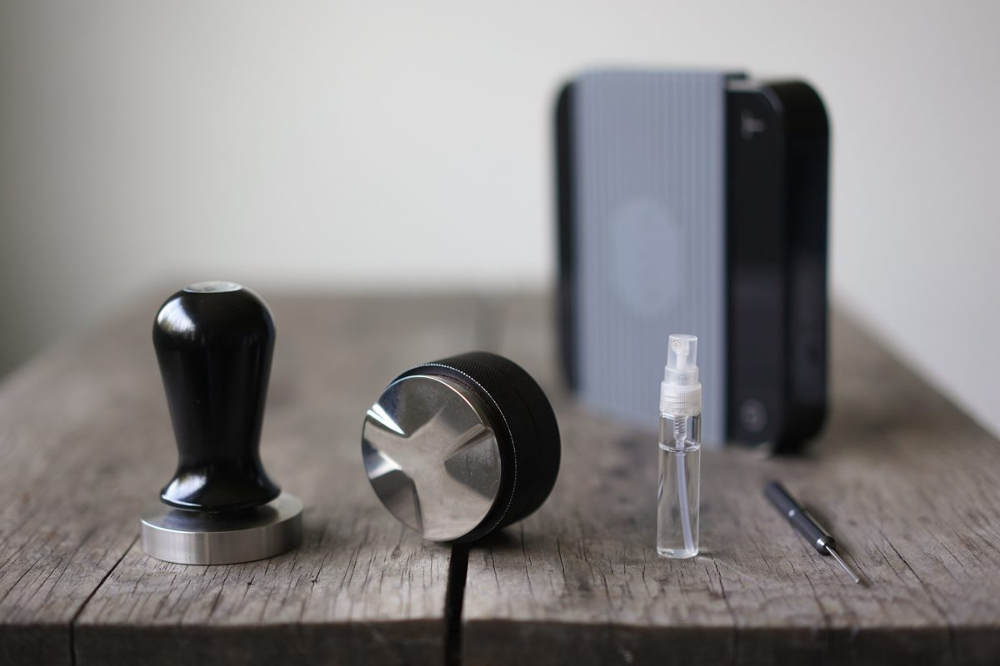

カフェ / 京都府舞鶴市
GASS
01234567890123456789012345678901234567890123456789
所在地の番地「２００６−９」を、五桁のカウンターに並べました(制作側の遊びです)。
京都府舞鶴市にあるカフェ「GASS」のご案内ページです。営業時間やメニューなど、詳しいことは準備中。まずはInstagramをのぞいてみてください。

制作側の連想
「GASS」から、メーターの数字を思い浮かべた。
屋号の響きから、制作側は家の壁などにある、ガスメーターの五桁のカウンターを連想しました。これは制作側の連想で、お店の理念・由来とは無関係です。店名の由来は分かりません。このサイトでは、各ページの見出しに五桁の数字(右端は赤)を置き、ページ番号の代わりにしています。
検針票
確認できていること
| 所在地 | 京都府舞鶴市浜２００６−９ |
|---|---|
| 電話 | 070-1768-0036 |
| 営業時間 | 準備中 |
| 定休日 | 準備中 |
| ご予約 | 準備中 |
| 駐車場 | 準備中 |
| SNS | Instagram @gass.maizuru |
所在地・電話番号・Instagramのみ確認できています。それ以外は「準備中」と表示しています。
四つの窓
金属と豆のイメージ。
写真はお店のものではありません。イメージで選んだ、国外・撮影地不明のフリー素材です。

撮影地不明のイメージ 
撮影地不明のイメージ 
撮影地不明のイメージ 
撮影地不明のイメージ